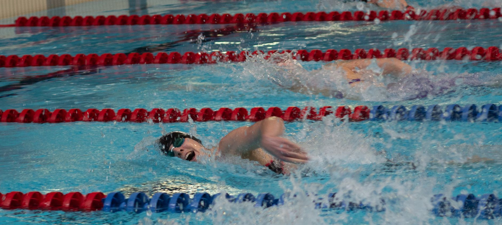

One Swimmer's NCAA Debut — and What It Means for Young Athletes at Home
When collegiate swimmer Sophia Umstead stepped onto the deck at her first NCAA Championships, she wasn't just competing in a race. She was standing at the finish line of thousands of early mornings, hard sets, and quiet acts of discipline that most people never see. Her recent reflection on her swim career, covered by The Holland Sentinel, serves as a meaningful reminder of how long and purposeful the path to elite swimming truly is — and how early it begins.
For parents and young athletes in Wesley Chapel, Land O' Lakes, and the greater Tampa Bay area, Umstead's story is more than inspiring. It is instructional.
The Long Game: Why Early Development Matters
Most NCAA swimmers didn't wake up one day and decide to be great. They built their skills gradually, often starting competitive swimming in middle school or even earlier. The technical habits, mental resilience, and love of the sport that carry swimmers to the collegiate level are almost always rooted in their youth training experience.
That is why the environment where a young athlete first learns to compete matters so much. Coaches who emphasize technique over times, who build character alongside speed, and who help swimmers fall in love with the process — not just the results — are the ones who produce athletes who last.
What a Lasting Swim Career Actually Looks Like
Sophia Umstead's reflection on her career highlights something that competitive parents and young swimmers alike should hear clearly: longevity in the sport requires more than talent. It requires consistency, coachability, and a willingness to grow through setbacks.
Here are a few principles that tend to define swimmers who go the distance:
- Technical mastery comes before speed. Proper stroke mechanics at a young age create the foundation for faster times later — and reduce the risk of injury.
- Mental toughness is trained, not inherited. Swimmers who learn to handle tough practices, disappointing swims, and the pressure of big meets early in their career are far better prepared for the college recruiting process and beyond.
- Rest and recovery are part of the program. Elite development is not about training harder than everyone else. It is about training smarter, which includes sleep, nutrition, and knowing when to step back.
- Community drives commitment. Swimmers who feel connected to their team and their coaches stay in the sport longer and perform better when it counts.
Building That Foundation Right Here in the Tampa Bay Area
Young athletes in Wesley Chapel and Land O' Lakes don't have to look far to find a program that takes development seriously. At Nexar Aquatic Academy, the focus is on building complete swimmers — athletes who are technically sound, mentally prepared, and genuinely passionate about the sport. Whether a swimmer is just starting out or already setting their sights on high school varsity competition and beyond, the right coaching environment makes all the difference.
Sophia Umstead's journey to the NCAA didn't happen overnight, and the young swimmers training in our community today are writing their own long-term stories. Every practice rep, every race, and every season is a chapter in that story.
A Message for Parents
If your child is swimming competitively or considering it, the most important investment you can make is not in the fastest program — it is in the most thoughtful one. Look for coaches who communicate clearly, programs that prioritize athlete well-being, and a team culture that makes your young athlete want to come back tomorrow.
The NCAA finish line starts with a first lap. Make sure that first lap is taken in the right place, with the right people. Nexar Aquatic Academy is proud to be that place for families across the Wesley Chapel and Land O' Lakes community.
Ready to get in the water?
First practice is completely FREE — no commitment needed.